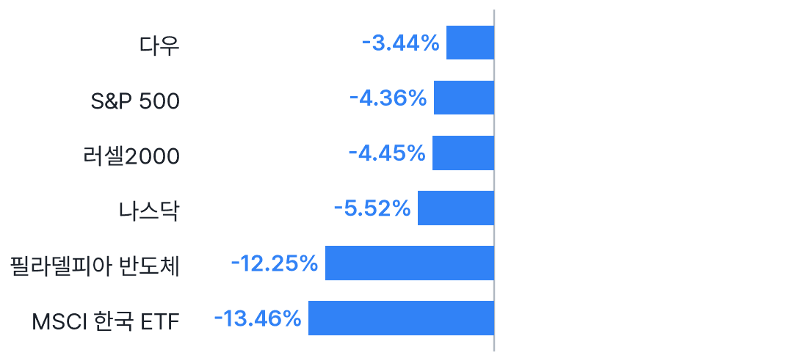
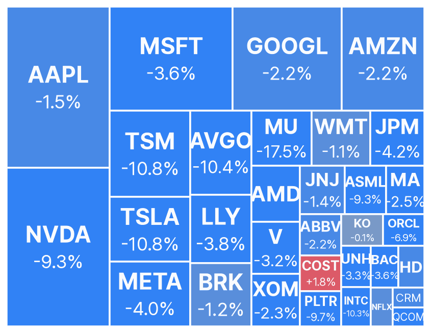
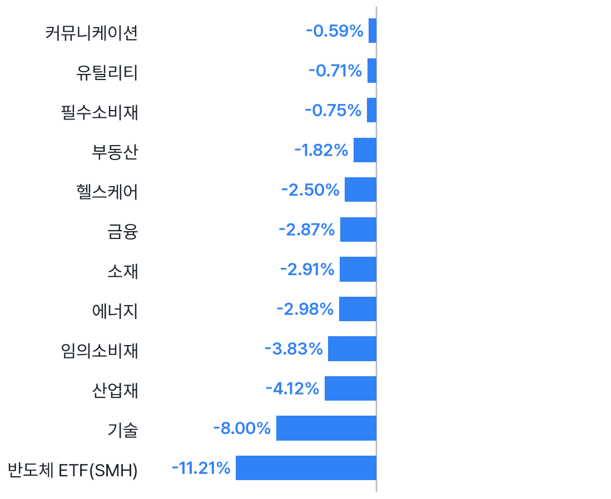
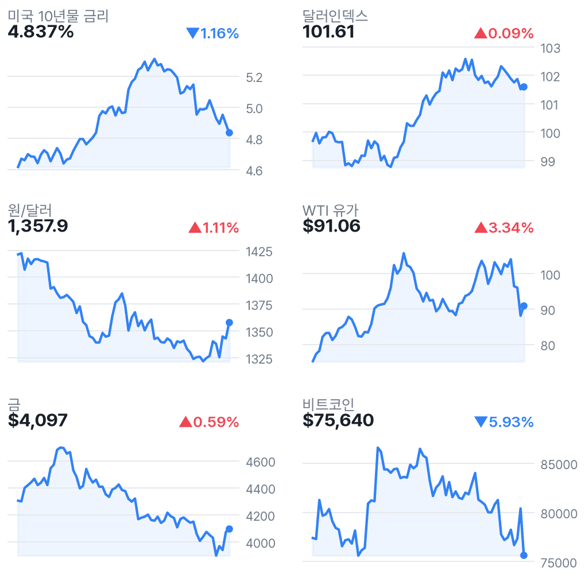
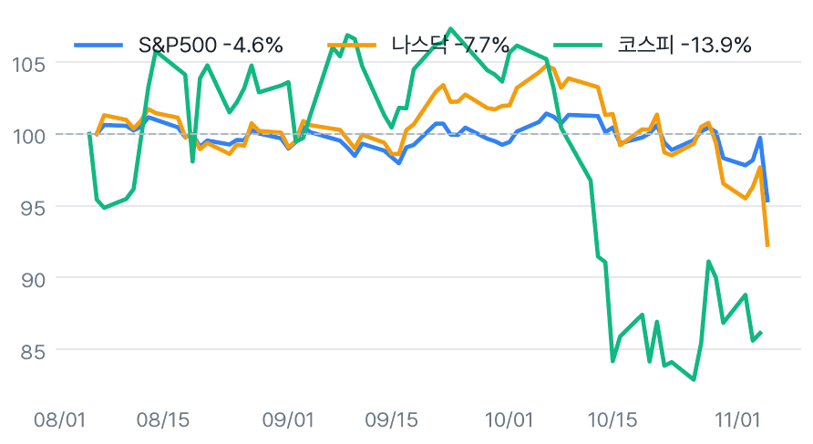

나스닥 5.52%↓, AI 규제 우려에 반도체 투매
✅ 핵심 요약
- 나스닥 -5.52%·S&P500 -4.36%, AI 규제 우려에 기술주 투매.
- 반도체 -12.25%, 마이크론 -17.46%·AMD -17.26%로 낙폭 집중.
- EWY -13.46%·원/달러 1,357.9원, 국내 반도체·외국인 수급 경계.
- 오늘 22:30 미국 고용보고서: 비농업 고용 예상 65K·실업률 4.2%.
📊 주요 지표
S&P 500
7,353.73
▼4.36%
나스닥
24,315.00
▼5.52%
다우
51,523.06
▼3.44%
필라델피아 반도체
9,011.14
▼12.25%
VIX
28.18
▲69.66%
미국 10년물
4.837%
▼1.16%
원/달러
1,357.9
▲1.11%
달러인덱스
101.61
▲0.09%
WTI
$91.06
▲3.34%
금
$4,097
▲0.59%
비트코인
$75,640
▼5.93%
EWY(한국 ETF)
$131.65
▼13.46%
🧭 시장 해석
미국장은 나스닥 -5.52%, 반도체 -12.25%로 기술주에 매도가 집중됐다. 수집된 로이터·국내 보도는 중간선거 이후 AI 규제 우려를 하락 배경으로 지목했다. 규제 확정이 아니라 정책 불확실성의 재평가로 읽힌다.
EWY -13.46%와 원/달러 +1.11%는 국내장 부담 신호다. 전일 코스피도 -5.28%여서 반도체 낙폭과 외국인 수급이 관건이다. EWY 등락을 코스피 예상 낙폭으로 볼 수는 없다. 오늘 밤 고용보고서가 다음 변수다.
AI·반도체 동반 하락, 정책 우려의 확산 여부
엔비디아 -9.26%, 브로드컴 -10.43%, TSMC ADR -10.78%까지 동반 하락했다. 수집 헤드라인은 AI 규제 우려와 데이터센터 지연 우려를 전한다. 국내에서는 메모리·장비주로의 파급이 관전 포인트다. 추가 검색에서 관련 보도를 확보하지 못해 구체적인 규제안·시행 여부는 단정하지 않는다.
VIX 급등·국채 강세, 장후 실적 반응은 차별화
VIX는 28.18로 +69.66%, 미국 10년물 금리는 4.837%로 하락했다. 국채로의 안전자산 이동을 전한 MarketWatch 보도와 맞물린 위험회피 흐름이다. 장후에는 클라우드플레어 +15.00%, 에어비앤비 +10.92%, 몬스터 -5.19%로 엇갈렸다. 실적 실제치는 수집 자료에 없어 호실적 여부는 단정하지 않는다.
📈 차트
미국 주요 지수 등락률

2026-11-05 미국 정규장 종가 기준 · EWY는 코스피 선행 지표로 참고
미국 빅테크·대형주 히트맵

타일 크기 = 시가총액, 색 = 등락률 (빨강 상승 · 파랑 하락)
미국 섹터 ETF 등락률

SPDR 섹터 ETF + 반도체(SMH)
금리·환율·원자재 (3개월)

우측 상단 = 전일 대비
3개월 추세 비교 (시작=100)

미국 vs 한국 지수 흐름
🏦 애널리스트 · 리서치
- QCOM — TD Cowen 목표가 $200→$185 하향Buy 의견 유지. 주가 -9.49%와 함께 목표가 하향이 이어졌지만 투자의견 하향은 아니다.
- QCOM — Barclays 목표가 $180→$150 하향Underweight 의견 유지. Evercore는 $159→$165로 올려 기관별 시각은 엇갈렸다.
- AMD — UBS $730→$700, JP Morgan $550→$575전일 수집 변경으로 UBS는 Buy, JP Morgan은 Neutral 유지. 목표가 방향이 상반된다.
- MA·V — Truist 목표가 각각 $674→$735·$443→$470모두 Buy 유지 의견. 목표가는 상향됐지만 당일 주가는 각각 -2.49%·-3.20%였다.
미국 대형주 의견·목표가 변경 12건 (Yahoo)
- 목표가 하향AMD · UBSBuy · 목표가 $730 → $700 · 11/05 07:46 KST
- 목표가 상향AMD · JP MorganNeutral · 목표가 $550 → $575 · 11/05 04:22 KST
- 목표가 상향MA · Truist SecuritiesBuy · 목표가 $674 → $735 · 11/06 00:48 KST
- 목표가 상향PLTR · BarclaysOverweight · 목표가 $265 → $273 · 11/05 03:41 KST
- 목표가 하향QCOM · TD CowenBuy · 목표가 $200 → $185 · 11/06 05:53 KST
- 목표가 하향QCOM · RosenblattBuy · 목표가 $235 → $205 · 11/06 04:30 KST
- 목표가 하향QCOM · BarclaysUnderweight · 목표가 $180 → $150 · 11/06 04:02 KST
- 목표가 상향QCOM · Evercore ISI GroupIn-Line · 목표가 $159 → $165 · 11/05 23:29 KST
- 목표가 하향QCOM · SusquehannaNeutral · 목표가 $185 → $165 · 11/05 22:40 KST
- 목표가 상향V · Truist SecuritiesBuy · 목표가 $443 → $470 · 11/06 01:07 KST
- 목표가 상향XOM · CitigroupNeutral · 목표가 $155 → $175 · 11/05 06:16 KST
- 목표가 상향XOM · TD CowenBuy · 목표가 $180 → $193 · 11/05 04:16 KST
국내 종목분석 리포트 30건 (네이버 리서치)
-
한화투자증권 · 2026-11-05
-
하나증권 · 2026-11-05
-
하나증권 · 2026-11-05
-
하나증권 · 2026-11-05
-
하나증권 · 2026-11-05
-
하나증권 · 2026-11-05
-
하나증권 · 2026-11-05
-
하나증권 · 2026-11-05
-
하나증권 · 2026-11-05
-
하나증권 · 2026-11-05
-
하나증권 · 2026-11-05
-
교보증권 · 2026-11-05
-
하나증권 · 2026-11-05
-
하나증권 · 2026-11-05
-
교보증권 · 2026-11-05
-
하나증권 · 2026-11-05
-
하나증권 · 2026-11-05
-
교보증권 · 2026-11-05
-
교보증권 · 2026-11-05
-
교보증권 · 2026-11-05
-
유안타증권 · 2026-11-05
-
유안타증권 · 2026-11-05
-
유안타증권 · 2026-11-05
-
유안타증권 · 2026-11-05
-
유안타증권 · 2026-11-05
-
한화투자증권 · 2026-11-05
-
유안타증권 · 2026-11-05
-
한화투자증권 · 2026-11-05
-
한화투자증권 · 2026-11-05
-
한화투자증권 · 2026-11-05
국내 투자전략 리포트 8건 (네이버 리서치)
-
한화투자증권 · 2026-11-05
-
대신증권 · 2026-11-05
-
대신증권 · 2026-11-05
-
신한투자증권 · 2026-11-05
-
신한투자증권 · 2026-11-05
-
유진투자증권 · 2026-11-05
-
IBK투자증권 · 2026-11-05
-
유진투자증권 · 2026-11-05
국내 시황정보 리포트 8건 (네이버 리서치)
-
신한투자증권 · 2026-11-05
-
DS투자증권 · 2026-11-05
-
유안타증권 · 2026-11-05
-
유안타증권 · 2026-11-05
-
다올투자증권 · 2026-11-05
-
신한투자증권 · 2026-11-05
-
신한투자증권 · 2026-11-05
-
SK증권 · 2026-11-05
국내 경제분석 리포트 4건 (네이버 리서치)
-
키움증권 · 2026-11-05
-
IBK투자증권 · 2026-11-05
-
SK증권 · 2026-11-05
-
iM증권 · 2026-11-05
📰 주요 뉴스
-
AI 규제 우려가 반도체·기술주 전반으로 확산.Reuters
-
테슬라 -10.77%, 정치·정책 민감주의 변동성 확대.CNBC
-
주가 급락과 장기금리 하락이 동반된 위험회피 흐름.MarketWatch
-
고용·임금의 예상 대비 차이가 금리와 주가의 변수.CNBC
미국·글로벌 헤드라인 18건
-
MarketWatch · 11/06 07:00
-
CNBC · 11/06 06:57
-
WSJ Markets · 11/06 06:55
-
CNBC · 11/06 06:46
-
MarketWatch · 11/06 06:44
-
CNBC · 11/06 06:43
-
MarketWatch · 11/06 06:43
-
WSJ Markets · 11/06 06:41
-
MarketWatch · 11/06 06:39
-
MarketWatch · 11/06 06:37
-
CNBC · 11/06 06:32
-
MarketWatch · 11/06 06:32
-
MarketWatch · 11/06 06:31
-
Reuters · 11/06 06:30
-
MarketWatch · 11/06 06:29
-
MarketWatch · 11/06 06:26
-
CBS News · 11/06 06:22
-
MarketWatch · 11/06 06:19
국내 헤드라인 18건
-
연합뉴스TV · 11/06 06:52
-
더스쿠프 · 11/06 06:52
-
한국경제 · 11/06 06:46
-
아시아경제 · 11/06 06:41
-
연합뉴스TV · 11/06 06:35
-
연합뉴스TV · 11/06 06:31
-
글로벌이코노믹 · 11/06 06:26
-
뉴스핌 · 11/06 06:21
-
연합뉴스 · 11/06 06:20
-
머니투데이 · 11/06 06:18
-
연합인포맥스 · 11/06 06:14
-
매일경제 · 11/06 06:12
-
MBC 뉴스 · 11/06 06:10
-
한국경제 · 11/06 06:10
-
연합뉴스 · 11/06 06:07
-
뉴스핌 · 11/06 06:05
-
MBC 뉴스 · 11/06 06:04
-
연합뉴스 · 11/06 06:01
애널리스트 관련 헤드라인 12건
-
MarketBeat · 11/06 05:13
-
MarketBeat · 11/06 05:13
-
MarketBeat · 11/06 04:53
-
Benzinga · 11/06 04:48
-
Benzinga · 11/06 04:11
-
Timothy Sykes · 11/06 04:02
-
MarketBeat · 11/06 03:27
-
Benzinga · 11/06 02:54
-
Benzinga · 11/06 02:33
-
Benzinga · 11/06 02:15
-
MarketBeat · 11/06 01:28
-
MarketBeat · 11/06 00:44
🗓️ 일정
경제지표·이벤트 (KST)
- 22:30🇺🇸 미국 Unemployment Claims11/05 · 중요도 중간 · 예상 197K · 이전 194K
- 22:30🇺🇸 미국 Average Hourly Earnings m/m11/06 · 중요도 높음 · 예상 0.3% · 이전 0.1%
- 22:30🇺🇸 미국 Non-Farm Employment Change11/06 · 중요도 높음 · 예상 65K · 이전 29K
- 22:30🇺🇸 미국 Unemployment Rate11/06 · 중요도 높음 · 예상 4.2% · 이전 4.2%
- 00:00🇺🇸 미국 Prelim UoM Consumer Sentiment11/07 · 중요도 중간 · 예상 48.1 · 이전 46.3
- 00:00🇺🇸 미국 Prelim UoM Inflation Expectations11/07 · 중요도 중간 · 이전 4.7%
- 01:00🇯🇵 일본 BOJ Gov Ueda Speaks11/07 · 중요도 높음
어젯밤 장 마감 후 실적 (미국)
- MNST Monster Beverage Corporation장후시총 $143.3B · EPS 예상 $0.30 · 시간외 ▼5.19%
- ABNB Airbnb, Inc.장후시총 $105.6B · EPS 예상 $2.86 · 시간외 ▲10.92%
- NET Cloudflare, Inc.장후시총 $94.9B · EPS 예상 $0.02 · 시간외 ▲15.00%
- EOG EOG Resources, Inc.장후시총 $77.1B · EPS 예상 $4.45 · 시간외 ▲0.00%
- SPG Simon Property Group, Inc.장후시총 $73.9B · EPS 예상 $3.32 · 시간외 ▼2.86%
다음 미국 세션 실적 예정
- BRK.A Berkshire Hathaway Inc.시간미정시총 $1248.7B · EPS 예상 -
- BRK.B Berkshire Hathaway Inc.시간미정시총 $1248.7B · EPS 예상 $5.91
- ENB Enbridge Inc장전시총 $106.3B · EPS 예상 $0.36
- MRNA Moderna, Inc.장전시총 $103.2B · EPS 예상 ($1.10)
- BAM Brookfield Asset Management장전시총 $86.4B · EPS 예상 $0.44
- HUM Humana Inc.장전시총 $50.1B · EPS 예상 ($1.03)
- HMC Honda Motor Company, Ltd.시간미정시총 $45.7B · EPS 예상 -
- VST Vistra Corp.장전시총 $40.4B · EPS 예상 $2.89
- UI Ubiquiti Inc.시간미정시총 $33.9B · EPS 예상 $3.82
- ECHO EchoStar Corporation장전시총 $28.7B · EPS 예상 $0.02
- PPL PPL Corporation장전시총 $26.9B · EPS 예상 $0.53
👀 체크포인트
- 국내 개장EWY -13.46% 이후 반도체 낙폭·외국인 수급·원/달러 반응 확인
- 22:30미국 비농업 고용 예상 65K·실업률 4.2%·시간당임금 전월비 0.3%
- 내일 00:00미시간대 소비자심리 예비치 예상 48.1·인플레이션 기대 이전 4.7%